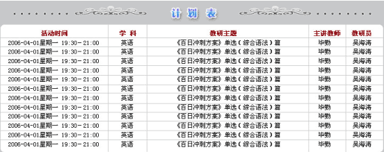
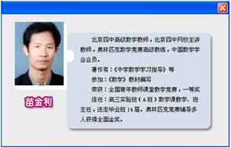
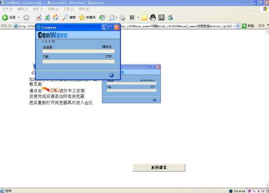
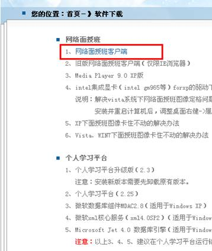
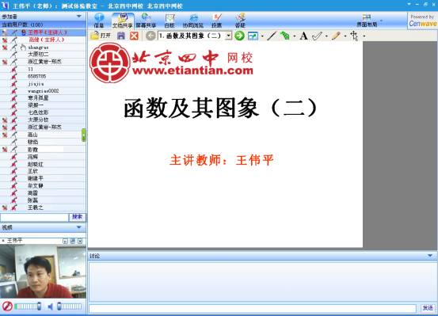
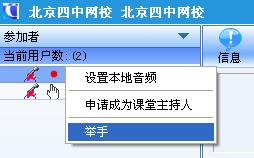
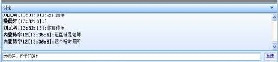

教师版概述
教师版版面更加整洁、内容更加丰富，充分的考虑到广大教师们的需求。教师们通过教师卡，注册并登陆后，才可以看到全部的资源。也就是说，教师版是专门为合作学校教师服务的一个板块，教师们获得的资源和服务是专属的。
教师版功能模块：走进四中、远程教研、资源中心、名校试题、模拟组卷、合作学校新闻、合作学校项目介绍、合作学校展示及数字校园。
远程教研使用帮助
在进入“远程教研”系统之前请先调试好自己的耳机、话筒、摄像头。教师在教室中的权限是由主持人（管理员）控制的，主持人可以开放参与者的话筒、视频、书写、操作等功能，主持人会根据教研活动的需要，让教师之间通过语音、视频、文字等进行交流。
在远程教研活动计划表中，可以看到近期的活动安排、主讲教师教师简介及教研员简介，如果想要了解学科教研的信息，请在相应教研员名字上单击，查看教研员联系方式，把您的问题和建议反馈给教研员。
具体操作如下：
在课程表中点击主讲教师的名字，弹出教师的照片和简介，如下图：


在活动开始前，点击课程名称，直接登录相应的远程教研活动现场，在登录的时候，会自动下载安装一个客户端，不用进行任何操作，如下图：

如果客户端自动下载失败，可以手动进入北京四中网校主页www.etiantian.com中的右边栏，点击“软件下载”中的网络面授班客户端进行手动下载。

下载安装完成后，进入“远程教研”栏目，点击正在进行的教研主题，填写教师姓名，即可进入教研。如下图：

教师在远程教研系统中可以进行如下的操作：
举手：在自己用户名上右键单击，选择“举手”，如下图：

讨论：在主持人开设了讨论的权限后，老师们可以在下面的输入框中发表言论，点击"发送"参与讨论，如下图：
